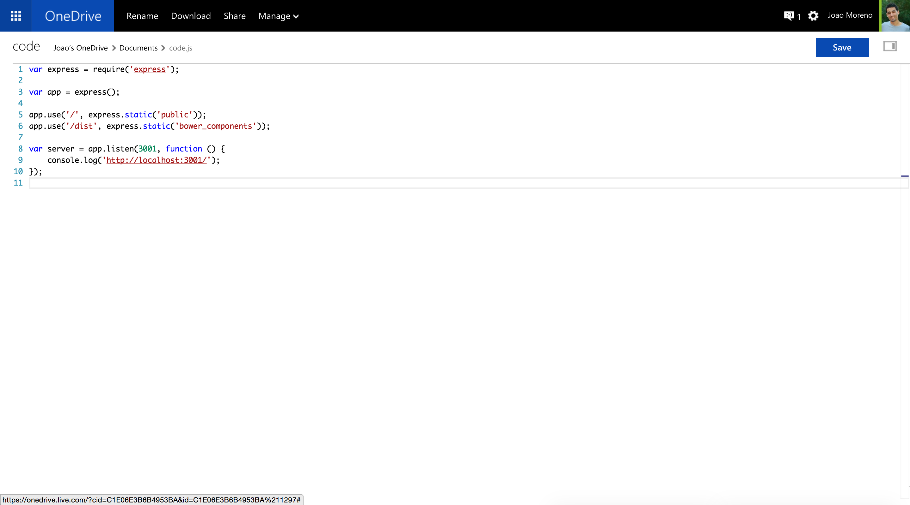
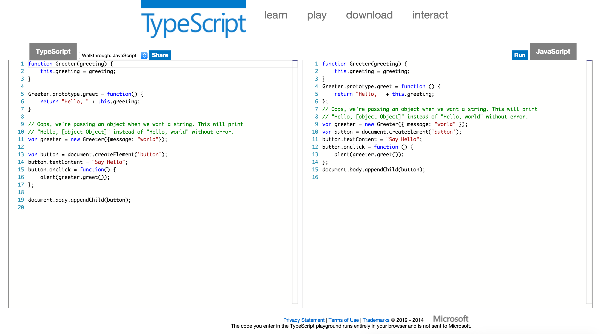
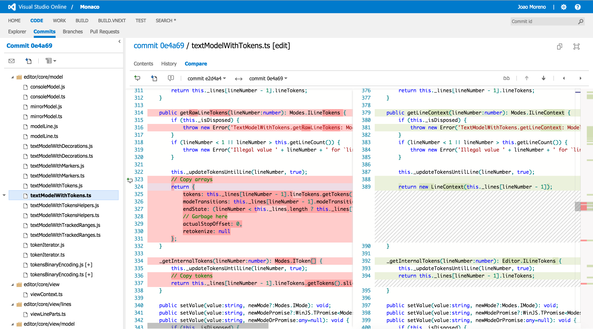
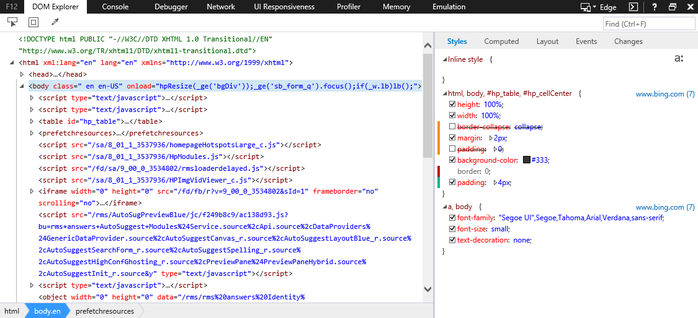
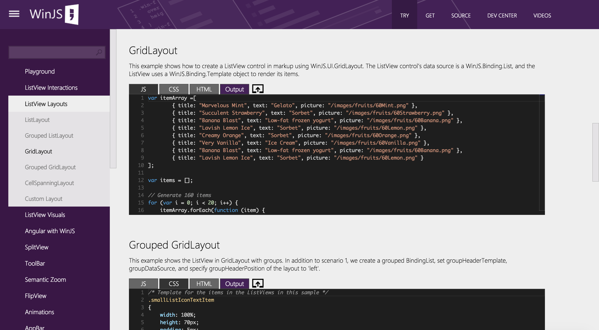
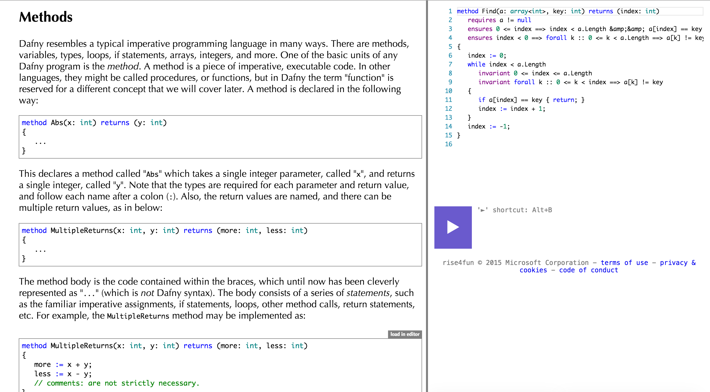
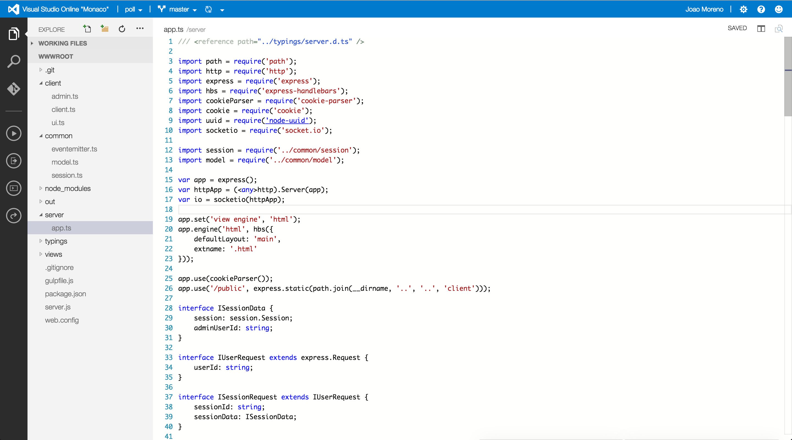
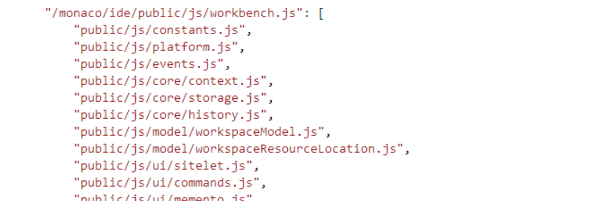
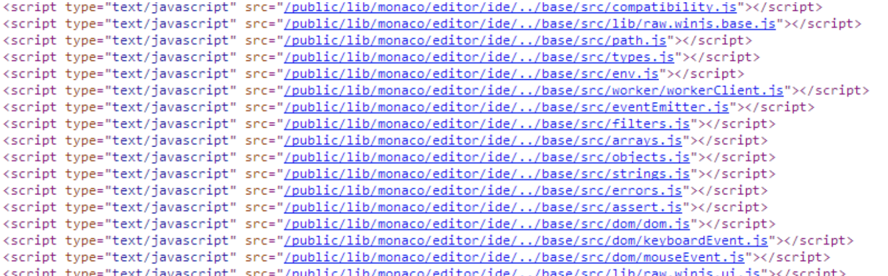
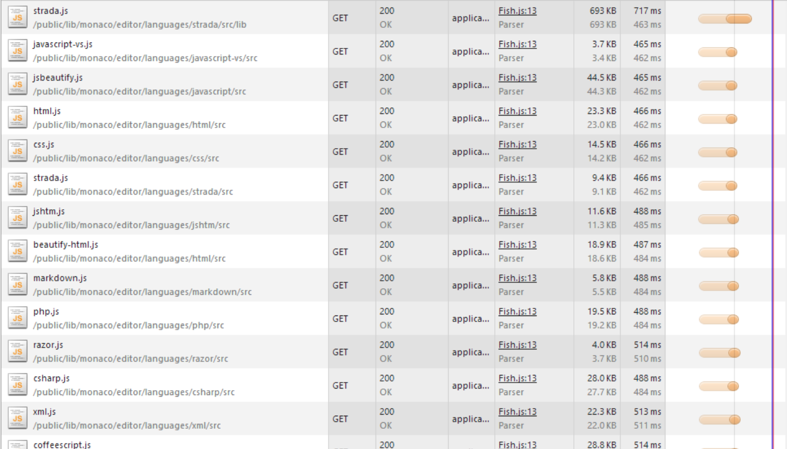

Building a large scale JavaScript application in TypeScript
João Moreno
joao.moreno@microsoft.com
How are you feeling today?
What do we build?
Web Standars based
Developer Tools and
Cloud Services






rise4fun


Visual Studio Online "Monaco"
Large JavaScript application
90% client side code
10% server side code
The Road to Monaco
| 50 kLOC | 100 kLOC | 500 kLOC |
|---|---|---|
| Modules Classes Interfaces Promises |
AMD Lazy Loading Contributions |
Components Dependency Injection |
| 10% TypeScript | 50% TypeScript | 100% TypeScript |
today Autumn 2011
We enjoy programming in JavaScript ™
Pains
Large code bases need to come up with
Refactoring JavaScript code is
"Javascript code rots over time."
— Frustrated Developer
Describing APIs means keeping documentation
TypeScript to the rescue
All JavaScript code is TypeScript.
JavaScript libraries work with TypeScript.
function Greeter(greeting) {
this.greeting = greeting;
}
Greeter.prototype.greet = function() {
return "Hello, " + this.greeting;
};
TypeScript to the rescue
Structural typing, type inference.
var person = {
name: 'João',
male: true,
country: 'Portugal'
};
// error
var lastName = person.lastName;
// isMale is of type boolean
var isMale = person.male;
TypeScript to the rescue
Compiles to
Runs
// DOM access
var button = document.createElement('button');
button.textContent = "Say Hello";
button.onclick = () => alert('Hello!');
// Node.JS Express server
var express = require('express');
var app = express();
app.get('/', (req, res) => res.send('Hello!'));
app.listen(3000);
Demo
The Road to Monaco
| 50 kLOC | 100 kLOC | 500 kLOC |
|---|---|---|
| Modules Classes Interfaces Promises |
AMD Lazy Loading Contributions |
Components Dependency Injection |
| 10% TypeScript | 50% TypeScript | 100% TypeScript |
today Autumn 2011
Code Organization
var Monaco = {};
Monaco.Strings = {};
Monaco.Strings.Util = {};
Monaco.Strings.Util.trim = function () { /* etc */ };
No relationship to the
Renaming files, refactoring was a huge pain.
Dependency Management
"… our dependency graph was such a mess that each area had a dependency on just about every other area."— Embarrassed Developer

Script Order
 Eager Script Loading
AMD
Asynchronous Module Definition
define('module_id', ['dependency_id'], function(dependency) {
// code
return {
// exports
};
});
Popularized by RequireJS.
TypeScript External Modules
TypeScript supports
import dependency = require('dependency_id');
export function foo() {
// code
}
While